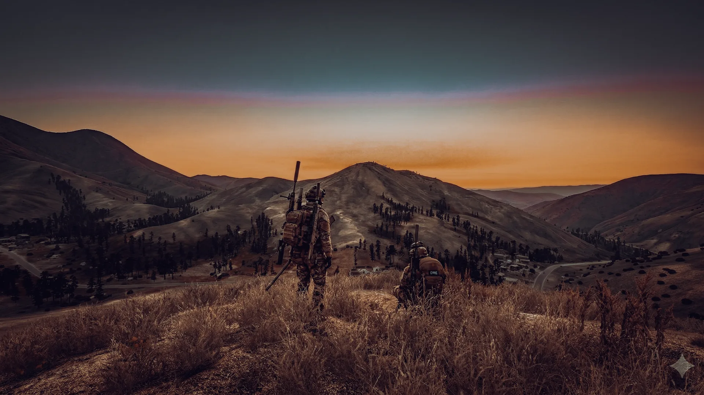

Retake POIs
Claim tiered strongholds, manage cooldowns and face AI designed to punish careless pushes.
A fully custom DayZ experience
Hacksaw is built around systems that talk to each other, lore that crosses maps and a community that has helped shape the server over time.
Choose your own progression
The Capital needs fighters, but Hacksaw also makes room for builders, pilots, collectors, producers, traders, mechanics and the player who just wants the perfect car.
Claim tiered strongholds, manage cooldowns and face AI designed to punish careless pushes.
Recycle, mine, smelt, print, brew and turn raw loot into advanced progression.
Unlock traders and specialist loops through quests, gems and skill-based objectives.
Store valuable vehicles, qualify for helicopters and make your fleet unmistakably yours.
Use Camp Lesnoy, the Training Centre, KC-10 support and player-run services to find your place.
Carry your inventory into a harsher map where staff support is limited and every decision has weight.
Capital Customs
Vehicles are more than transport. Hacksaw's custom ecosystem includes expanded storage, specialist licences, virtual garages, motorhomes and a spray shop built around expression.
Radio Zenit
More than 200 tracks were created around Hacksaw's world. Between songs, the station host pulls pieces of the story together, reports on the factions and gives the server a soundtrack that belongs nowhere else.
Sometimes the quickest way to understand Hacksaw is to get in a car, turn on the radio and drive.
The conflict beneath the gameplay
The factions fighting over Chernarus are tied to the Serpent PMC operating in Takistan. Their weapons, chemical attacks and ambitions are part of the same wider collapse.

CKC intelligence brief
Recovered reports describe abandoned Soviet experiments, the POX chemical programme and the Serpent PMC's attempt to turn human subjects into weapons. Somewhere in the region, TX001—Ronin—remains outside anyone's control.
A living server
The other half is the people maintaining the world, running events, answering tickets, training players and building the next system.
Temporary hotel rooms give new players somewhere to learn the server before committing to a permanent base.
Designated players help individuals and groups practise CQB, communication, movement and T6 preparation.
An invite-only mercenary group can help with difficult POIs and rescue situations across both maps.
Abandoned vehicles become Sunday auction lots instead of permanently clogging the world.
There is a lot to learn
Start with quests, ask questions, learn one system at a time and let the end game arrive naturally.